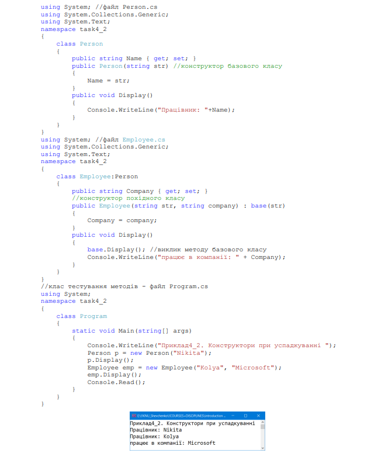

Приклади виконання завдань
Спадкування — один з трьох фундаментальних принципів об'єктноорієнтованого програмування,
оскільки саме завдяки йому можливо створення
ієрархічних класифікацій. Використовуючи спадкування, можна створити загальний
клас, який визначає характеристики, властиві множини пов'язаних елементів. Цей клас
потім може бути успадкований іншими, вузькоспеціалізованими класами з додаванням
до кожного з них своїх унікальних особливостей. В мові С# клас, який успадковується,
називається базовим або суперкласом. Клас, який успадковує базовий клас,
називається похідним. Отже, похідний клас — це спеціалізована версія базового класу.
У похідний клас, що успадковує всі змінні, методи, властивості, оператори і
індексатори, визначені в базовому класі, можуть бути додані унікальні елементи.
1. Оголошення базових і похідних класів
Розглянемо приклад task4_1. Нехай є клас Person, який описує людину, використовуючи її ім’я name. Для виведення на консоль значення імені означений метод Display().

Для опису співробітників компанії нам став потрібен клас, що описує співробітника підприємства, наприклад, клас Employee. Оскільки цей клас буде реалізовувати той самий функціонал, що і клас Person, так як співробітник – це також і людина, було б доцільним зробити клас Employee похідним (або спадкоємцем, або підкласом) від класу Person, який, в свою чергу, називається базовим класом або батьком (або суперкласом). Для класу Employee базовим є Person, і тому клас Employee успадковує всі ті самі властивості, методи, поля, які є в класі Person. Єдине, що не успадковується, тобто не передається при спадкуванні, це конструктори базового класу. Для успадкування базового класу необхідно після імені похідного класу через символ ':' вказати ім’я базового класу.
За замовчуванням усі класи успадковуються від базового класу Object, навіть
якщо ми явно не встановлюємо успадкування. Тому вище означені класи Person і
Employee крім своїх власних методів, також матимуть і методи класу Object:
ToString(), Equals(), GetHashCode() і GetType().
Існує ряд обмежень в процесі успадкування класів в C#:
• не підтримується множинне спадкування, клас може успадковуватися тільки
від одного класу;
• при створенні похідного класу треба враховувати тип доступу до базового
класу. Тип доступу до похідному класу повинен бути таким самим, як і у
базового класу, або більш строгим. Тобто, якщо базовий клас має тип доступу
internal, то похідний клас може мати тип доступу internal або private, але не
public;
• якщо базовий і похідний класи знаходяться в різних збірках (проєктах), в
цьому випадку похідний клас може успадковувати тільки від класу, який має
модифікатор public;
• якщо клас оголошений з модифікатором sealed, то від цього класу не можна
успадковувати і створювати похідні класи.
2. Доступ до членів базового класу з класу-спадкоємця
Режим успадкування визначає спосіб успадкування елементів базового класу. Режим успадкування визначає, в які частини похідного класу потрапляють елементи базового класу. Похідний клас може мати доступ тільки до тих членів базового класу, які визначені з модифікаторами private protected (якщо базовий і похідний клас знаходяться в одній збірці), public, internal (якщо базовий і похідний клас знаходяться в одній збірці), protected і protected internal.
3. Конструктори, ключове слово base
Тепер додамо в класи конструктори. Клас Person має конструктор, який встановлює властивість Name. Оскільки клас Employee успадковує і встановлює ту саму властивість Name, логічно було б не повторювати код установки, а викликати відповідний код класу Person. До того ж властивостей, які треба встановити в конструкторі базового класу, і параметрів може бути набагато більше. За допомогою ключового слова base можна звернутися до базового класу. У нашому випадку в конструкторі класу Employee треба встановити ім'я і компанію. Але ім'я ми передаємо на установку в конструктор базового класу, тобто в конструктор класу Person, за допомогою виразу base (name).
Конструктори не передаються похідному класу при спадкуванні. І якщо в базовому класі не визначений конструктор за замовчуванням без параметрів, а тільки конструктори з параметрами (як у випадку з базовим класом Person), в похідному класі ми обов'язково повинні викликати один з цих конструкторів через ключове слово base.
4. Порядок виклику конструкторів
При виклику конструктора похідного класу спочатку відпрацьовують конструктори базових класів і тільки потім конструктори похідних. Наприклад, візьмемо такі класи:
У підсумку ми отримуємо наступний ланцюг виконань.
Спочатку викликається конструктор Employee (string name, int age, string
company).
Він делегує виконання конструктору Person (string name, int age).
Викликається конструктор Person (string name, int age), який сам поки не
виконується і передає виконання конструктору Person (string name)
Викликається конструктор Person (string name), який передає виконання
конструктору класу System.Object, так як це базовий за замовчуванням клас для
Person.
Виконується конструктор System.Object.Object(),
потім виконання
повертається конструктору Person (string name)
Виконується тіло конструктора Person (string name),
потім виконання
повертається конструктору Person (string name, int age)
Виконується тіло конструктора Person(string name, int age),
потім виконання
повертається конструктору Employee (string name, int age, string company)
Виконується тіло конструктора Employee (string name, int age, string company).
В результаті створюється об'єкт Employee.
5. Інтерфейси
Інтерфейс являє посилальний тип, який може оголошувати деякий функціонал, тобто набір методів і властивостей без їх реалізації. Потім цей функціонал реалізують класи і структури, які застосовують дані інтерфейси.
Оголошення інтерфейсу
Для оголошення інтерфейсу використовується ключове слово interface. Як
правило, назви інтерфейсів в C# починаються з великої літери I, наприклад,
IComparable, IEnumerable (так звана угорська нотація), однак це не обов'язкова
вимога, а більше стиль програмування.
Що може визначати інтерфейс? В цілому інтерфейси можуть визначати такі
сутності:
− методи;
− властивості;
− індексатори;
− події;
− статичні поля і константи (починаючи з версії C# 8.0).
Однак інтерфейси не можуть визначати нестатичні змінні. Наприклад,
найпростіший інтерфейс, який визначає всі ці компоненти:
В даному випадку визначено інтерфейс IMovable, який представляє певний об'єкт, що рухається. Методи і властивості інтерфейсу можуть не мати реалізації, в цьому вони зближуються з абстрактними методами і властивостями абстрактних класів. В даному випадку інтерфейс оголошує метод Move(), який буде представляти деяке пересування. Він не має реалізації. Те саме стосується властивості Name. Якщо його члени – методи і властивості не мають модифікаторів доступу, то за замовчуванням цей доступ є public, так як мета інтерфейсу − оголошення функціоналу для реалізації його класом. Це стосується також і констант і статичних змінних, які в класах і структурах за замовчуванням мають модифікатор private. В інтерфейсах вони мають за замовчуванням модифікатор public. Наступний код визначає явно модифікатори доступу в інтерфейсі.
Застосування інтерфейсів
Не можна створювати об'єкти інтерфейсу безпосередньо за допомогою конструктора, як наприклад, в класах: Інтерфейс призначений для реалізації в класах і структурах. Наприклад, маючи інтерфейс IMovable, який-небудь клас або структура можуть застосувати даний інтерфейс. Розглянемо приклад task4_4, в якому описаний інтерфейс IMovable і визначений клас Car, похідний від інтерфейсу IMovable.

У програмі task4_4 визначено метод Action(), який в якості параметра приймає
об'єкт інтерфейсу IMovable. На момент написання коду ми можемо не знати, що це
буде за об'єкт - якийсь клас або структура. Єдине, в чому ми можемо бути впевнені, що
цей об'єкт обов'язково реалізує метод Move() і ми можемо викликати цей метод.
Іншими словами, інтерфейс – це контракт щодо обов'язкової реалізації деякого
функціоналу певним типом.
Інтерфейси мають ще одну важливу функцію. C# не підтримує множинне
успадкування, тобто можна успадкувати клас тільки від одного базового класу.
Інтерфейси дозволяють частково обійти це обмеження, оскільки в C# клас може
реалізувати відразу кілька інтерфейсів. Усі реалізовані інтерфейси вказуються через
кому. Розглянемо приклад task4_5, в якому клас Client реалізує два інтерфейси.

6. Стандартні інтерфейси NET
7. Абстрактні класи
Абстрактний клас схожий на звичайний клас. Він також може мати змінні,
методи, конструктори, властивості. Єдине, що при визначенні абстрактних класів
використовується ключове слово abstract. Головна відмінність полягає в тому, що не
можна використовувати конструктор абстрактного класу для створення його об'єкта.
Навіщо потрібні абстрактні класи? Припустимо, в програмі для банківського
сектора ми можемо визначити дві основні сутності: клієнт банку і співробітник банку.
Кожна з цих сутностей має свою специфіку, наприклад, для співробітника треба
визначити його посаду, а для клієнта – суму на рахунку. Відповідно клієнт і
співробітник становитимуть окремі класи Client та Employee. У той самий час обидві
ці сутності можуть мати щось спільне, наприклад, ім'я та прізвище, якусь іншу загальну
функціональність. І цю загальну функціональність краще винести в якийсь окремий
клас, наприклад, Person, який описує людину. Тобто класи Employee (співробітник) і
Client (клієнт банку) будуть похідними від класу Person. Оскільки всі об'єкти в
програмі представлятимуть або співробітника банку, або клієнта, безпосередньо ми від
класу Person створювати об'єкти не будемо. Тому має сенс зробити його абстрактним.
Розглянемо приклад task4_6 застосування абстрактних класів.

8. Різниця між абстрактним класом та інтерфейсом
Між інтерфейсами та абстрактними класами є такі відмінності:
• в інтерфейсі не можна оголошувати реалізації методів. В абстрактному класі
допускається оголошувати реалізації його елементів;
• інтерфейс не може мати конструктори. Абстрактний клас може мати
конструктори;
• інтерфейс не може містити поля даних. Абстрактний клас допускає
використання внутрішніх полів даних;
• елементи інтерфейсу за замовчуванням (без модифікатора доступу)
вважаються public. В абстрактних класах елементи за замовчуванням
вважаються private;
• елементи інтерфейсу не повинні містити модифікатори доступу (інакше
компілятор видасть повідомлення про помилку). В абстрактних класах
допускається наявність будь-якого модифікатора доступу в оголошенні
елементу класу;
• похідний клас може успадковувати тільки один абстрактний базовий клас. У
випадку використання інтерфейсів похідний клас може успадковувати будьяку
кількість інтерфейсів. Таким чином, інтерфейс – це альтернатива
абстрактного класу, з допомогою якої можна здійснити множинну спадковість.